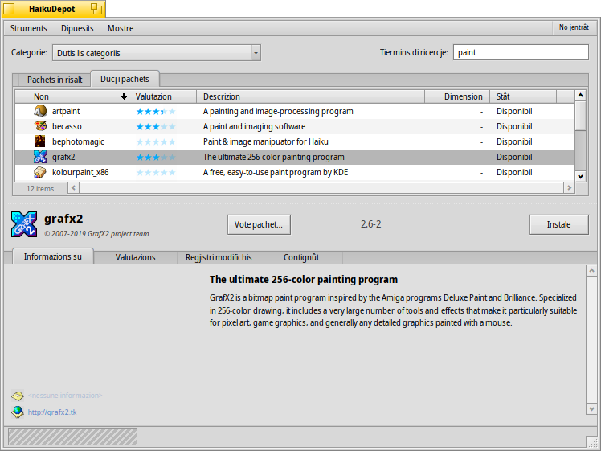
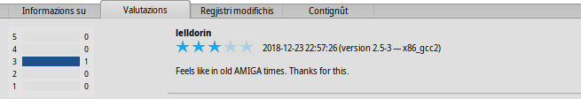
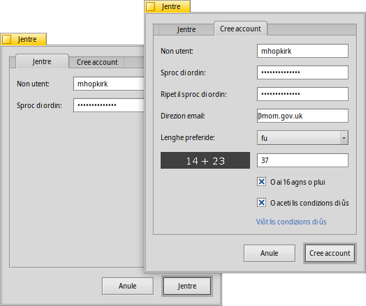
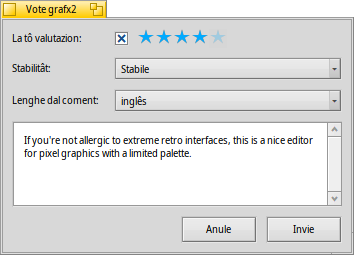

| Tabele |
| Il filtri La liste La aree des informazions I menù Struments e Mostre Creâ un account utent Valutâ e comentâ Regjistris di diagnostiche |
 HaikuDepot
HaikuDepot
| Deskbar: | ||
| Posizion: | /boot/system/apps/HaikuDepot | |
| Impostazions: | ~/config/settings/HaikuDepot/main_settings ~/config/cache/HaikuDepot/ - Iconis in cache, schermadis, descrizions e vie indenant... |
HaikuDepot e je la aplicazion centrâl cuant che si cjacare di gjestî i pachets software. Cun lui tu puedis esplorâ, cirî sui dipuesits dai pachets, instalâ e disinstalâ i pachets. In maniere predefinide HaikuDepot al partìs mostrant une liste di "Pachets in risalt", software che, de bande di tancj utents, a vegnin ritignûts interessants.

La seconde schede e mostre , la videade e cambie e si varà iconis plui piçulis e plui informazions metudis jù in colonis:
 Il filtri
Il filtri
Parsore o cjatin cualchi strument par filtrâ la liste dai pachets software disot:
Il menù a tende ti permet di limitâ la liste a specifichis categoriis come "Audio" o "Zûcs".
Il cjamp di test al filtre la liste a chei pachets che a àn la stringhe inseride (delimitade di spazi) tal lôr non o te lôr descrizion.
Il menù de sbare dai menù al determine cuâi dipuesits a àn di sei interogâts. I pachets "Locâl" a son chei che a son stâts instalâts di cualchi altre bande rispiet ai dipuesits in rêt; forsit di une clavute USB o discjariâts di cualchi sît web opûr un pachet che tu âs costruît di bessôl.
La liste
Come in ogni barcon di Tracker, tu puedis sielzi di un menù contestuâl cuale colone visualizâ, fasint clic diestri su pe intestazion de colone. Un clic di çampe al ordenarà la liste in base a chê colone. E po sì, tu puedis rangjâ lis colonis strissinantlis suntune gnove posizion.
Il stât de colone di un pachet al pues vê diviers stâts:
: Il pachet al è instalât e pront par jessi doprât.
: Il pachet al esist in chel dipuesit e al pues jessi discjariât e instalât. Se al à cualsisei dipendence su altris pachets, tu vignarâs informât in merit intal procès di instalazion e ti vignarà dade la sielte di discjariâ/instalâ dut ce che al covente.
: In spiete al ven mostrât par un pachet che al è in code pal discjariament/instalazion. Cuant che un pachet al ven discjariât, l'avanzament al ven mostrât tant che percentuâl.
Tu puedis cjapâ la linie a ponts tra la liste dai pachets e la aree des informazions par ridimensionâ in verticâl la liste dai pachets.
La aree des informazions
In bas e je une aree che e mostre lis informazions sul pachet che si à selezionât te liste parsore.
A drete dal non dal pachet, autôr valutazion e de version al è un boton, che – in base al stât atuâl dal pachet – ti permet di fâi o . Se un pachet al è za instalât, lì tu cjatarâs un boton , che ti fasarà vierzi la aplicazion.
Chi a son cuatri schedis: Informazions su, Valutazions, Regjistri modifichis e Contignût.
La prime schede e à une descrizion detaiade dal pachet, cussì ancje videadis e direzion dal contat e URL dal grup che al manten il pachet software, se disponibii. Fasint clic su pe miniature de schermade caturade te vierzarà a plene dimension intun gnûf barcon
La seconde schede e mostre lis valutazions e i coments dai utents, se disponibii.
A çampe si cjate une statistiche, che e mostre il numar di stelis (di 1 a 5) che il pachet al à vût e di trops utents.
Intal mieç a stan i coments dai utents cul lôr sorenon, il numar di stelis che a àn dât al pachet e cuale version dal pachet che a àn valutât o comentât. Tu cjatarâs plui informazions su ce mût valutâ un pachet di bessôl plui in bas.
Chi tu cjatis une cronologjie detaiade di dutis lis version dal pachet che a son stadis publicadis fin cumò, se chel che lu manten al furnìs chê informazion.
La ultime schede e mostre ducj i file e lis cartelis che un pachet al conten. Chest al funzione dome pai pachets za discjariâts.
I menù Struments e Mostre
Intal menù in alt tal barcon, tu cjatis l'element . Chest al domandarà dai dipuesits une liste inzornade dai pachets disponibii.
Cul secont element, , tu gjestissis i dipuesits. Al vierç lis preferencis dai Dipuesits, par zontâ/gjavâ o disabilitâ e abilitât i dipuesits.
al vierç SoftwareUpdater par cirî e instalâ i pachets inzornâts.
Sot di tu puedis sielzi di mostrâ ancje i e i te liste dai pachets. Pal utent normâl chei no son di nissune utilitât e dome a confusionaran la liste. Dut câs a son impuartants pes personis che a àn dibisugne des librariis e dai header (...) di un pachet par disvilupâ e compilâ programs che a dipendin di chescj.
Plui interessantis a son lis opzions par mostrâ dome i e i .
Creâ un account utent
Par podê valutâ un pachet ti covente un account utent sul Servidôr di Haiku Depot che al servìs ducj i pachets e al ten olme des valutazions e dai coments dai utents. Tu puedis creâ un account di dentri de aplicazion HaikuDepot, fasint clic sul menù te bande diestre de sbare dal menù che al mostre il to stât atuâl: . Sielzint al vierzarà un barcon cun dôs schedis; une par meti dentri il to non utent e la peraule di ordin (une volte che tu lis âs) par jentrâ, e chê altre par creâ un gnûf account:
Par creâ un account tu âs di:
- doprâ un non utent fat di caratars minuscui e cence caratars speciâi
- doprâ une peraule di ordin che e sedi lungje almancul 8 caratars cun almancul 2 letaris maiusculis e 2 numars
- indicâ une direzion e-mail valide (se tu desideris che ti vegni inviade une gnove peraule di ordin tal câs che tu te dismenteedis)
- risolvi il captcha
- striche lis caselis di selezion par confermâ che tu âs plui di 16 agns e che tu âs let lis condizions di ûs tal colegament lì sot.
Daspò sei jentrâts, il menù in alt a drete tal barcon di HaikuDepot al mostrarà , mostrant il to non utent. Cumò cul menù ti puedis sielzi tra o .
Valutâ e comentâ
Daspò vê creât un account utent e jessi jentrâts, tu puedis valutâ un pachet e lassâ un coment, se tu lu desideris. Al baste passâ parsore il mouse su pes stelis di valutazion te aree des informazions di un pachet e chestis a deventaran un boton . Fâsi clic par vierzi il barcon di valutazion:
Chi tu spostis il mouse parsore des stelis par impiâlis e sielzi il to vôt, tu puedis ancje sielzi il grât di stabilitât de aplicazion e sielzi la lenghe dal to coment opzionâl. Par creâ un coment che al vedi sens, tu varessis di vê doprât par un pôc la aplicazion che tu stâs par valutâ, in mût di cognossi lis sôs funzionalitâts, erôrs e stramberiis. E no sta scrivi la gnove divine comedie... tegnilu curt, dolç e gjentîl. :)
Dopo vê clicât su , i dâts a vegnin trasmetûts al servidôr. Tu podaressis vê di lâ sul menù e fâ prime di podê viodi lis tôs modifichis.
In ogni moment, tu puedis tornâ indaûr e modificâ il to coment e tornâ a dâ une valutazion. Tu puedis ancje platâ il to vôt dai altris utents disativant la casele , che e ven fûr une volte che si à valutât un pachet.
Regjistris di diagnostiche
Cuant che si dopre HaikuDepot, chest al interagjìs tant cu la rêt che cui servizis locâi. Lis robis a puedin lâ strucjis, cualchi volte in manieris che no si veve pensât cuant che e je stade scrite la aplicazion. In chei câs il messaç di erôr al podarès jessi no specific. Par judâti te diagnosi di un probleme indicât, HaikuDepot al pues furnî un regjistri cun ce che la aplicazion e à fat.
Un messaç di erôr al podarès sugjerî di viodi i regjistris par vê infomazions plui detaiadis opûr ti si podarès domandâ di indicâ il regjistri cuant che tu segnalis un probleme sul sisteme di bug tracking di Haiku.
Par viodi i regjistris di diagnostiche, HaikuDepot al à bisugne di jessi inviât dal Terminâl:
HaikuDepot -v debug
Il comant al dopre la opzion -v pal control de prolissitât dai regjistris di diagnostiche. I valôrs pussibii a son: off, info, debug e trace. Doprant off al regjistrarà dome une piçule part des informazions, al contrari trace al fasarà il lavôr cu la plui grande cuantitât di detais.
Cuant che HaikuDepot al partirà e cuant che al interagjirà cu la aplicazion, tu viodarâs scori il test tal barcon dal terminâl; chest al è il regjistri di diagnostiche.